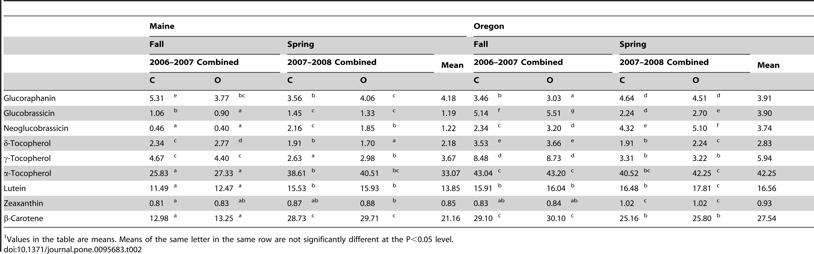

He buscat informació Google acadèmic
A He trobat un article escrit per Erica et al.(2014) que analitza si hi ha diferències entre el brocoli cultivat normalment o brocoli convencional i el brocoli cultivat ecològicament pel que fa el contingut de nutrients.He buscat a l'apartat resultats i poso una imatge:
El bròquil cultivat ecològicament pot contenir més antioxidants, com la vitamina E i el betacarotè, en comparació amb el bròquil convencional
No ens podem fiar de chat gpt primer perqué no té accés a tota la informació i no enten el que escriu perqué no és una inteligencia artificial general sinó un LLM large laguage model o model de llenguatge gegant.

Podem veure en la taula de més amunt que compara dos varietats de bròcoli anomenades Maine i Oregon, concretament compara nou compostos químics durant dos temporades de la primavera i la tardor. El compost més important és la vitamina E o alfa-tocoferol, que serveix per ajudar al nervis i els musculs a que funcionin bé. Sembla que no hi ha gairé diferencies entre el nivel de vitamina E en el bròcoli cultivat normal (convencional) o ecòlogic. També hi ha altres tocoferols que han mesurat al bròcoli (δ-tocoferol i γ-tocoferol) que no són tan importants perqué són petites proporcions i es destruiex ràpidamet. Aquests tocoferols estan en una proporció semblant en el bròcoli ecològic i normal. Els altres compostos analitzats al bròcoli són glucorafanina, glucobrasicina, neoglucobrasicina, luteina, zeaxantina i betacaroté. El betacaroté es conevrteix en vitamina A i no hi ha diferéncies entre els dos tipus de cultius